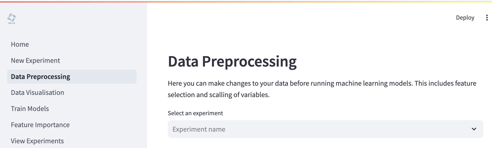
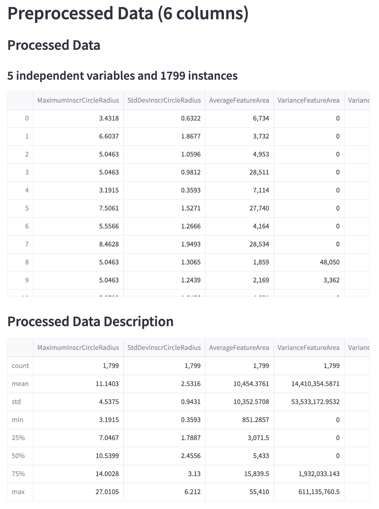

Preprocessing your data¶
Helix allows you preprocess your data before training any models. This includes normalising your data, removing low variance features or highly correlated features.

Data Preprocessing Options¶
Normalisation Method for Independent Variables
If you select “Standardisation”, your independent variables will be normalised by subtracting the mean and dividing by the standard deviation for each feature. The resulting transformation has a mean of 0 and values are between -1 and 1.
If you select “Minmax”, your independent variables will be scaled based on the minimum and maximum value of each feature. The resulting transformation will have values between 0 and 1.
If you select “None”, the data will not be normalised.
Transformation Method for Dependent Variable
If you select Log, the dependent variable will transformed with the natural logarithm (
ln/log e). If the minimum of your dependent variable is less than or equal to 0, it is first transformed by(y - min(y)) + 1to make all values positive, followed by the natural logarithm.If you select Square-root, the dependent variable is transformed by taking the sqare root of each value. If the minimum of your dependent variable is less than 0, it is first transformed by
y - min(y)to make all values at least 0, followed by the square root.If you select “Minmax”, your dependent variable will be scaled based on the minimum and maximum value of each feature. The resulting transformation will have values between 0 and 1.
If you select “Standardisation”, your dependent variable will be normalised by subtracting the mean and dividing by the standard deviation for each feature. The resulting transformation has a mean of 0 and values are between -1 and 1.
If you select “None”, the data will not be normalised.
The dependent variable cannot be normalised if your expermiment’s probelm type is classification.
Feature selection¶
Remove low variance features
To remove features with low variance, click the checkbox labelled “Variance threshold”, then adjust the threshold between 0 and 1. (Default: 0.10)
Remove highly correlated features
To remove features that are highly correlated with one another, click the checkbox labelled “Correlation threshold”, then adjust the threshold between 0 and 1. (Default: 0.80)
Lasso feature selection
Select features using the Lasso algorithm. Click the checkbox labelled “Lasso Feature Selection” then set the regularisation term, which should be non-negative. (Default: 0.05)
Run feature selection¶
Once you have configured your preprocessing measures, click “Run Data Preprocessing”. You will see a summary of your preprocessed data below.
After preprocessing is completed, a copy of your preprocessed data is saved to your experiment with the name <data file>_preprocessed.csv. E.g. BacterialAttachment.csv would produce a file called BacterialAttachment_preprocessed.csv. This data will be used for model training, feature importance.
